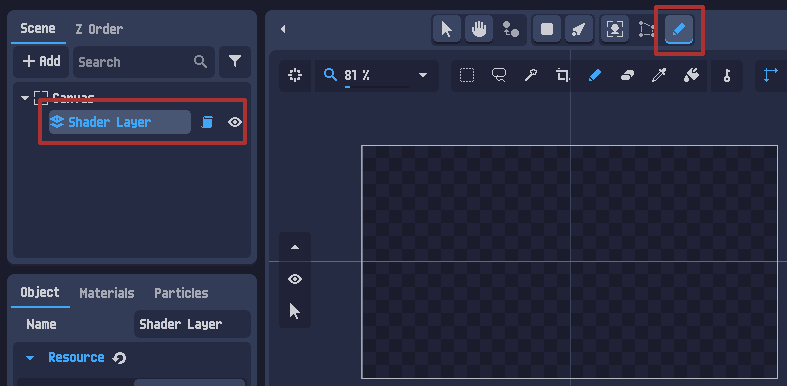
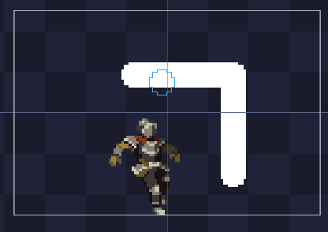
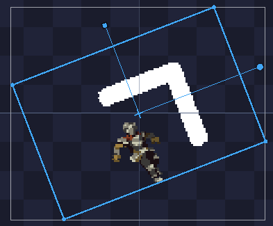
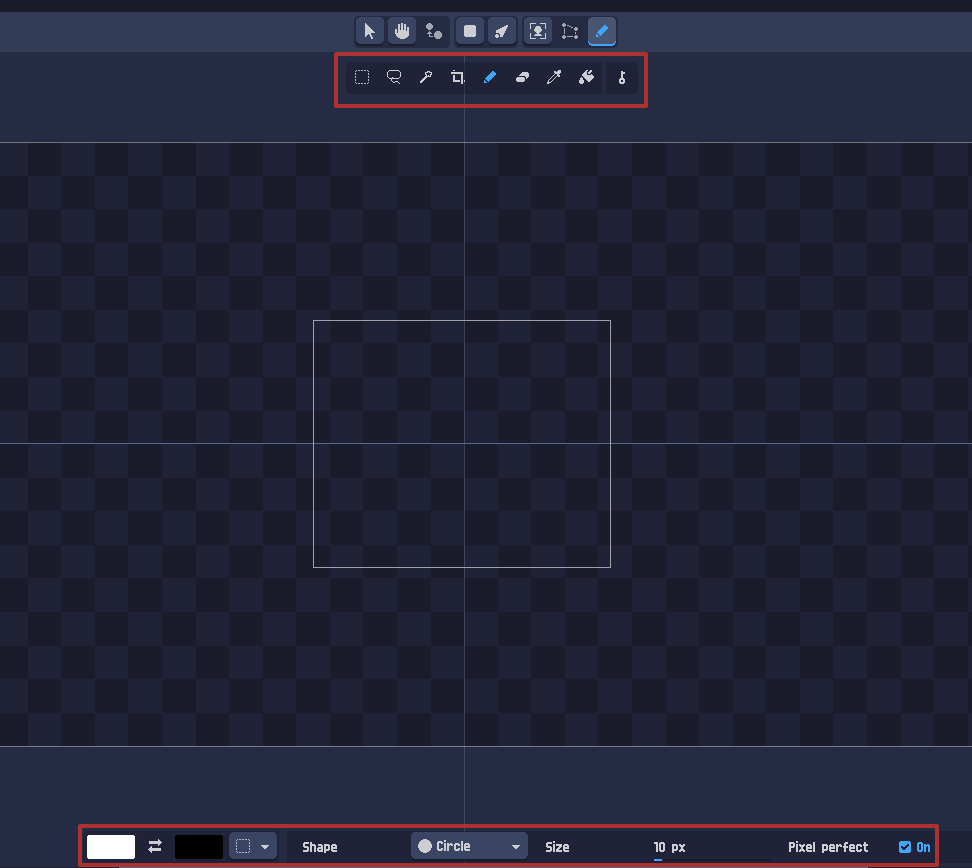
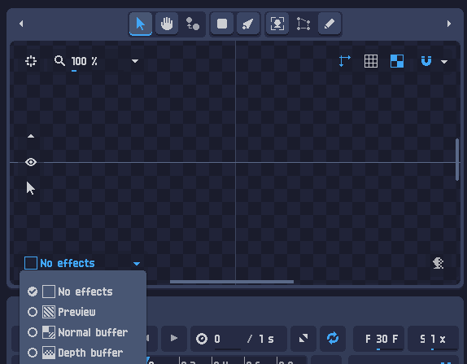
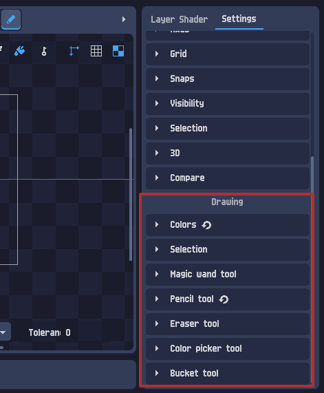
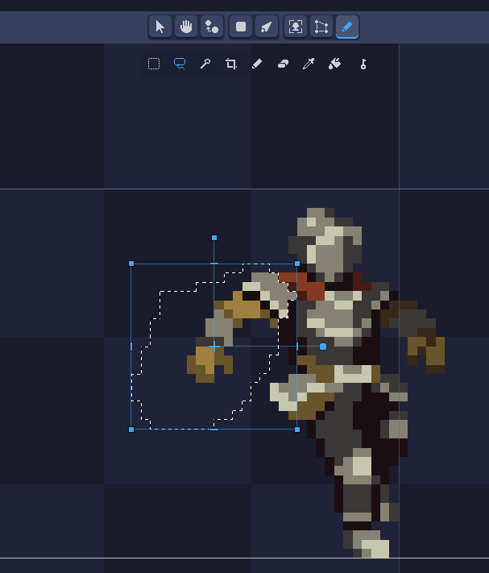
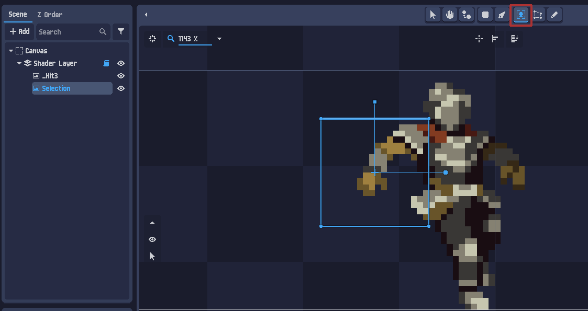

Drawing — a rajzeszköz: fess, javíts, darabolj
A PixelOver nem csak átalakít — közvetlenül rajzolni is tudsz benne: ceruza, radír, vödör (kitöltés), pipetta és kijelölő eszközök. Festhetsz egy rétegre vagy egy képre, retusálhatsz egy importált sprite-ot, és — ami a csont-animációhoz kulcsfontosságú — kijelöléssel feldarabolhatsz egy képet külön objektumokra. Ebben a leckében végigvesszük a teljes rajz-eszköztárat — egy működő, élő pixel-festő demóval.
Mire jó a rajzeszköz?
A Drawing (rajz) eszközzel közvetlenül a vászonra festesz pixeleket. Háromféle dolgon használhatod:
| Cél | Mit jelent |
|---|---|
| Réteg (Layer) | A teljes rétegre rajzolsz — a benne lévő összes objektum fölé/közé. Új pixel-tartalmat hozol létre a semmiből. |
| 2D kép (Image) | Egy importált kép tartalmát szerkeszted (retus, javítás, hozzárajzolás). |
| Animált 2D kép | Egy animált kép képkockáit szerkeszted. |
A bekapcsolása egyszerű: jelöld ki a célt a Scene fában, majd válaszd a felső eszköztárból a Drawing (ceruza) eszközt.

Rétegre vs. képre rajzolás
A kettő között egy fontos különbség van. Képre rajzolva a kép tartalmát módosítod közvetlenül — vagyis a rajzod a kép része lesz, és minden transzformáció (forgatás, méretezés, nyírás) együtt hat rá is.


A rajzeszközök
A Drawing eszköz bekapcsolása után megjelenik az aleszközök sora. A legfontosabbak:
| Eszköz | Mit csinál |
|---|---|
| Pencil (ceruza) | Pixeleket fest az elsődleges színnel. A pixel-art alap-eszköze. |
| Eraser (radír) | Töröl (átlátszóvá tesz) pixeleket. |
| Bucket (vödör) | Kitöltés: az összefüggő, azonos színű foltot átszínezi egy kattintással. |
| Color picker (pipetta) | Felveszi a kattintott pixel színét elsődlegesnek. |
| Selection / Lasso / Magic wand | Kijelölő eszközök (téglalap, szabadkézi, varázspálca) — a daraboláshoz (5. fejezet). |
A kijelölt eszköz beállításai a fő nézet alján jelennek meg: elsődleges ⇄ másodlagos szín, a kefe Shape-je (Circle/Square), a Size (méret px-ben) és a Pixel perfect kapcsoló.

Shape: Circle, Size: 10 px, Pixel perfect: On.
No effects (nyers pixelek) · Preview (shaderrel) · Normal buffer · Depth buffer.Egy működő mini rajzeszköz. Bal egér = elsődleges szín, jobb egér = másodlagos. Válassz eszközt és színt!
Színek és gyorsgombok
A bal oldali panelen kezeled a rajz színeit és pár kényelmi gombot:
- Elsődleges szín (Primary) — a bal kattintással fest.
- Másodlagos szín (Secondary) — a jobb kattintással fest. (Két szín kéznél = gyors váltás.)
- Key gomb — animációs kulcsot készít az aktuális rajzból (animált rajzhoz).
- Legördülő — más eszközt rendelhetsz a jobb kattintáshoz.
A beállítások két helyen élnek: a Project settings (csak az aktuális projektre) és a Global settings (alapértelmezés az új projektekhez). A rajz-gyorsbillentyűk a Drawing Subtool szekcióban vannak.

Colors, Selection, Magic wand, Pencil, Eraser, Color picker, Bucket.A 3. fejezet pixel-festő demójában a paletta egy színére jobb kattintva állítod be a másodlagos színt, balra az elsődlegest — pont mint a PixelOverben. A vásznon a bal egér az elsődlegessel, a jobb a másodlagossal fest.
Rajz darabolása objektumokká
Itt zárul be a kör a csont-animációval: egy összefüggő képet a rajzeszközzel külön objektumokra bonthatsz — pont amire a riggeléshez szükség van. A módszer egy kivágás–beillesztés:
- Jelöld ki a darabolni kívánt képet, és válaszd a Drawing eszközt.
- Válassz kijelölő eszközt: Selection Shape (téglalap), Lasso (szabadkézi) vagy Magic Wand (varázspálca).
- Jelöld ki a kívánt részt, majd Ctrl+X — kivágás.
- Válts vissza a Transform eszközre, jelöld ki a cél-objektumot (pl. a réteget), és Ctrl+V — beillesztés új objektumként.


Selection) a fában — már külön mozgatható.Húzz egy kijelölő téglalapot a rajz egy részére (pl. a fej köré).
Kivágás után a kijelölt darab külön objektum lesz — húzd arrébb az egérrel! Pontosan ez kell a riggeléshez.
Összefoglaló & merre tovább?
- Cél: rajzolhatsz rétegre (tiszta pixelek) vagy képre (a tartalmát módosítod — vigyázz a transzformációkkal).
- Eszközök: Pencil, Eraser, Bucket, Color picker + kijelölők; a beállítások (szín, Shape, Size, Pixel perfect) a nézet alján.
- No effects nézet rajzoláshoz — nyers pixelek, gyorsabb.
- Színek: elsődleges (bal katt) / másodlagos (jobb katt); Project vs Global beállítások.
- Darabolás: kijelölés → Ctrl+X → Transform → Ctrl+V → új objektum (a csont-animációhoz).
- Első lépések 2D · Szín-indexelés · Color cycling · Dithering
- Material editing · Particle systems · Csont-animáció · Drawing (itt vagy)
Ezzel kész a „shader & tools” kör! A rajzeszköz a hídelem: vele retusálhatsz egy importált képet, nulláról festhetsz egy rétegre, és — a legfontosabb — feldarabolhatsz egy rajzot a csont-animációhoz. A fenti demóban már festettél pixeleket és daraboltál objektumot — pont, amit a PixelOver rajzeszköze csinál.